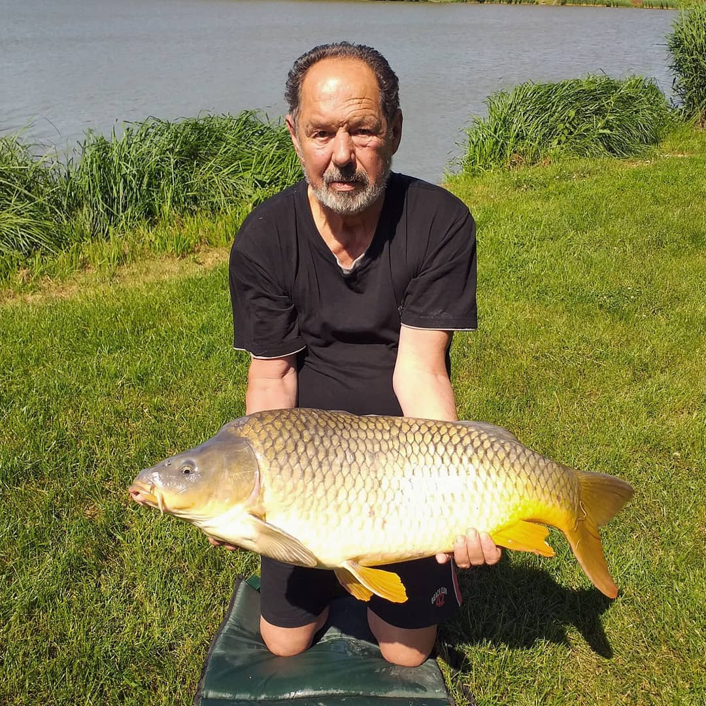

Srbský guláš podľa @casjenprome — Normy Jedál
Vítěz soutěže Středočeský šupináč, Jiří Vais, rybaří už 45 let let. K rybolovu ho na rozdíl od jiných mužů nepřivedla potřeba úniku od rodinného života 😊, ale jeho bratr, který ho naučil ten nejlepší sumčí guláš na světě! 😋🐟🍲
.
.
.
➡️https://1url.cz/pzviD
#casjenprome #magazin #mujpribeh #prozeny #cteni #ctenimebavi #relaxace #volnycas #story #inspirace #rozhovor #jirivais #rybar #rybareni #rybolov #hobby #chytapust #navnada #slapanickyrybnik #stredoceskysupinac #trofej #marina #gurman #rybimaso #amur #candat #stika #recept #srbskygulas #marinada